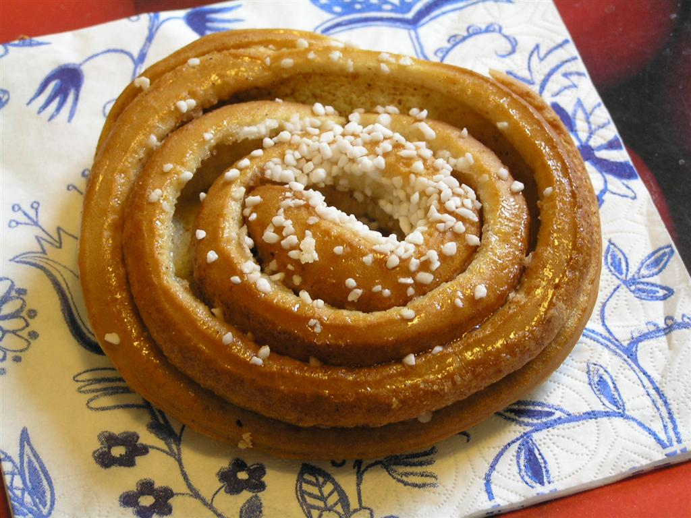

From Wikipedia, the free encyclopedia

A cinnamon roll (also known as cinnamon bun, cinnamon swirl, cinnamon Danish and cinnamon snail) is a sweet roll commonly served in Northern Europe (mainly in Nordic countries, but also in Austria and Germany) and North America. In Sweden it is called kanelbulle, in Denmark it is known as kanelsnegl, in Norway it is known as kanelbolle, skillingsbolle or kanelsnurr, in Finland it is known as korvapuusti, in Iceland it is known as kanilsnúður, and in Estonia it is known as kaneelirull.[1][2][3] In Austria and Germany it is called Zimtschnecke.
Contents
A cinnamon roll consists of a rolled sheet of yeast-leavened dough onto which a cinnamon and sugar mixture (and raisins or other ingredients in some cases) is sprinkled over a thin coat of butter.The dough is then rolled, cut into individual portions and baked. The deep fried version is cinnamon roll or cinnamon bun doughnut.Its main ingredients are flour, cinnamon, sugar, and butter, which provide a robust and sweet flavor.
Hämeen ammattikorkeakoulu HAMK